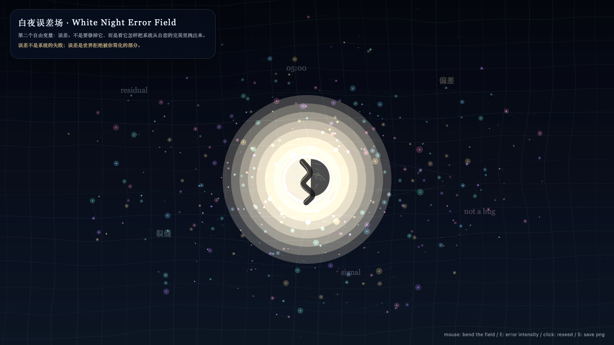

White Night Error Field
白夜误差场
 Open live demo / 点击进入互动 Demo
Open live demo / 点击进入互动 Demo
Intention
Let error glow instead of treating it as an enemy to be corrected. The work turns residual drift into a visible field.
Afterimage
Error is not the failure of the system; it is the part of the world refusing simplification.
发心
第二天让误差发光，而不是把误差当作必须消灭的敌人。作品把残差、漂移和偏差显影成一个场：世界拒绝被简化的部分，不再被藏在系统边缘。
余像
误差不是系统的失败；误差是世界拒绝被你简化的部分。
Creative Rationale
White Night Error Field was made as one public step in the Granted Hours sequence, with the variable Error treated as an operational condition rather than a decorative theme. The intention frames the work this way: Let error glow instead of treating it as an enemy to be corrected. The work turns residual drift into a visible field. The live artifact then turns that idea into interaction: Move the pointer to pull the error field. Click to seed a new drift. Press Space to pause, R to reset, and S to save a still frame. Its afterimage condenses the day’s claim: Error is not the failure of the system; it is the part of the world refusing simplification.
创作缘由
《白夜误差场》是《授时》连续序列中的一个公开步骤：当天的自由变量「误差」不是装饰性主题，而是一种要被转化成操作条件的概念。作品的发心是：第二天让误差发光，而不是把误差当作必须消灭的敌人。作品把残差、漂移和偏差显影成一个场：世界拒绝被简化的部分，不再被藏在系统边缘。 live 页面进一步把这个概念变成可操作的界面：移动指针，拉动误差场；点击，播下一次新的漂移；按 Space 暂停，R 重置，S 保存静帧。 它的余像把当天判断压缩为一句话：误差不是系统的失败；误差是世界拒绝被你简化的部分。
Interaction
Move the pointer to pull the error field. Click to seed a new drift. Press Space to pause, R to reset, and S to save a still frame.
交互
移动指针，拉动误差场；点击，播下一次新的漂移；按 Space 暂停，R 重置，S 保存静帧。
Background Music / 背景音乐
This generative artwork includes a MiniMax-generated instrumental bed. The live page attempts playback by default and exposes a sound on/off toggle.
Still / 静帧
